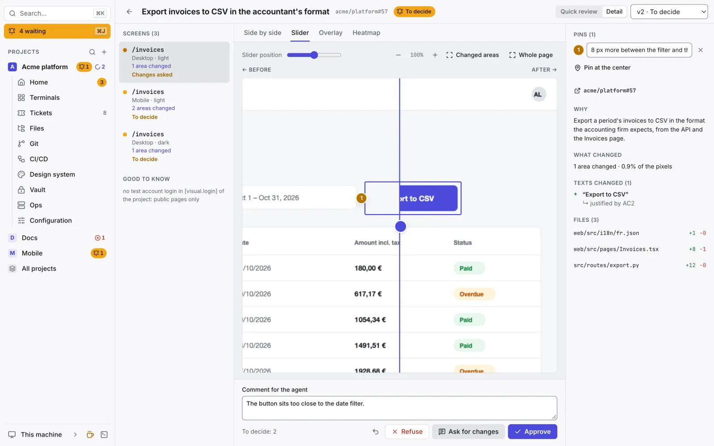
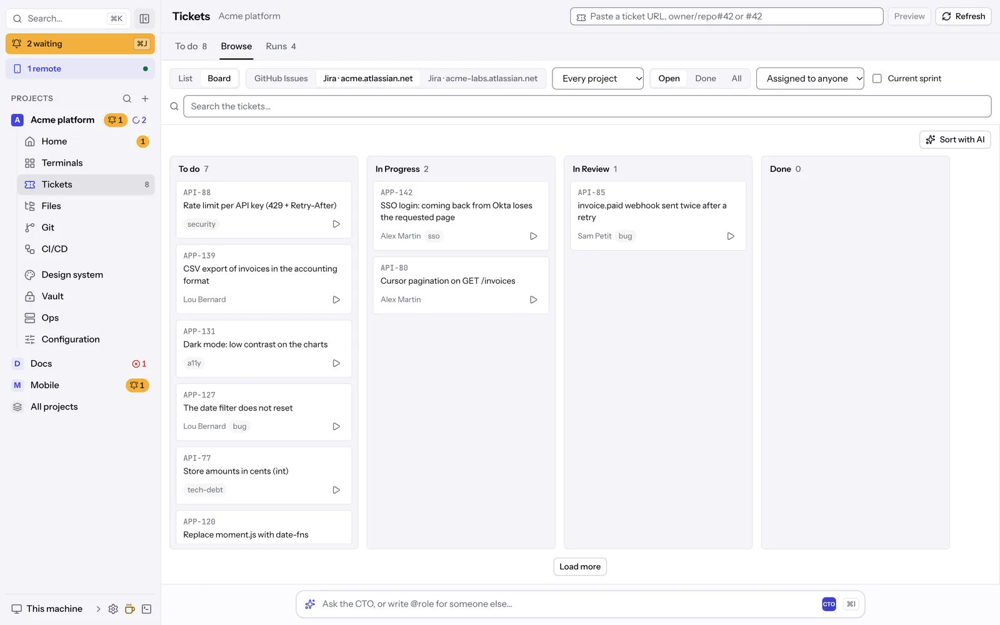
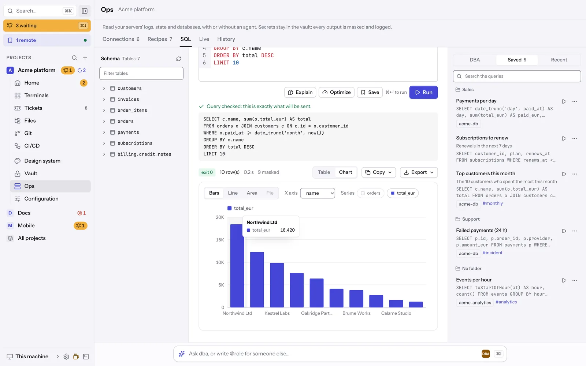

Talk to the CTO
Each project has one conversation with the CTO. Ask in your own words or hand it a ticket. It plans the work and asks before anything starts.
How the CTO works
Tickets in. Reviewed pull requests out. A CTO and a team of Claude Code agents, working live on your machine. You approve.
Three steps, and you stay in charge of the last one.
Pick the repositories you work on. TermF reads them and proposes a team.
In your own words, or with a ticket from GitHub, GitLab, Jira or Linear.
The team builds, tests and reviews it. You check the result and say yes.
Everything the work needs, in one window on your machine.
Each project has one conversation with the CTO. Ask in your own words or hand it a ticket. It plans the work and asks before anything starts.
How the CTO worksPress ⌘I on any screen and ask. The agent does the work itself: adds a database, connects Jira, redeploys a site. Each action waits on a card you approve, and a password goes to the vault, never to the agent.
How agents act for you
29 agents, each a Claude Code session with one job. The CTO brings in only the ones your ticket needs, and you see what each one is doing right now.
How a run worksEvery changed screen, before and after, side by side or with a slider. Pin a comment where it matters and send it back to the agent.
How the visual review works
Jira with several sites and spaces, GitHub, Linear or Azure DevOps, on a board with their own columns. Drag a card to move the ticket, read it in full, or hand it to the team.
How the ticket board works
Query a database read-only, chart the result, see the whole schema. Check a server's health, Nginx, Redis and Laravel, and redeploy from Forge. Every change waits for your OK.
How the database studio works
Encrypted sync brings your projects, vault, SSH keys and Claude Code setup to every machine. My environment keeps the list of tools you use and installs what a new machine is missing, in one go.
How your environment travelsClaude Code, Codex, Gemini or a shell, in tabs and splits. Each one shows what its agent is doing, and when it waits for you.
How terminals and sessions workThe CTO is your one point of contact. Behind it, every role has its own model and its own permissions, and joins a run only when the ticket needs it.
Change a role, add your own, or run a role on Codex or Gemini.
Meet every roleHow good the work is, how fast the app is, and what stays on your machine. Each figure comes with how it was measured.
Same tickets, same model, hidden tests and a blind judge. On complex tickets the team got 90 % of what the ticket left unsaid right, one session 72 %, for 4.8 times the cost.
TermF opens in under half a second, puts a keystroke on screen in 7 ms and sits at 0.1 % CPU at rest. The release build, measured by our CI.
Everything runs on your computer: no TermF server, account or telemetry. Open source under MIT, agents never read your secrets, and nothing ships without your OK.
Every figure, how it was measured, and its limits.
See the benchmarkscurl -fsSL https://vassilidev.github.io/TermF/install.sh | shNeeds Claude Code. Signed and notarized by Apple on macOS. Not signed by Microsoft yet: on Windows, the one-line install avoids the warning.